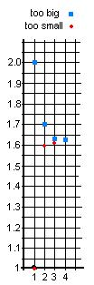
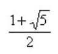

Sheri's work on the quadratic equation x2 - x - 1 = 0
Don had Sheri keep track of the number she put in for x, and the number she got out. Her aim was to get 0, of course. Now Sheri made a bunch of mistakes here. She left out the negative on -1 and she didn't subtract 1 all the time. Don found these mistakes and Sheri corrected them. Don and Sheri got into changing 1/3 to a decimal, by dividing 1 by 3, which she admitted to not knowing too much about. But she's learning. They also got into negative exponents again, because the calculator gave an answer -7.6 E -5 when she put 1.618 in for x.
After a chaotic beginning, Don asked Sheri to organize her work:
x2 - x - 1 = 0
in out
2 1
1 -1
Sheri wrote, " Our answer is between 1 and 2, because when we put 2 in we get 1 out. When we put 1 in we get -1 out and 0 is between 1 and -1".
in out
1.6 -0.04
1.7 0.19
1.5 -.25
1.8 .44
"Our answer is between 1.6 and 1.7".
in out
1.62 0.0044
1.61 -0.0179
"Our answer is between 1.61 and 1.62 because 1.62 in gives .0044 out, and positive, and 1.61 in gives -0.0179, out, and negative. Our answer is closer to 1.62 ".
in out
1.618 -7.6 E -5 = -.000076
1.619 0.002161
1.6188 .00171344
1.6182 not finished
(The first output from the calculator above, -7.6 E -5, means -7.6 x10-5. Don and Sheri worked on negative exponents and Sheri finally wrote that as -.000076 ).
At this point Don wrote the first two of Sheri's results below, then Sheri wrote the rest.
Too big -> 2, 1.7, 1.62, 1.619 ,
Too small ->1, 1.6, 1.61, 1.618 ,
Notice that these numbers are honing in on the answer to the nearest whole number, the nearest tenth, the nearest hundredth, and so on. These are the beginnings of two infinite sequences, both sequences are approaching just one of the two solutions of the quadratic equation x2 - x - 1 = 0. Sheri and Don talked about this.
Tune in for more of this work by Sheri, if she continues.
Sheri did continue; after many calculations, she came up with an approximation to the answer, with 7 decimal places:
Too big -> 2, 1.7, 1.62, 1.619, 1.6181, 1.61804, 1.618034, 1.6180340,...
Too small ->1, 1.6, 1.61, 1.618, 1.6180, 1.61803, 1.618033, 1.6180339,...
"And our answer is closer to 1.6180340 !"

At this point Don had Sheri graphed these two sequences. The problem was that the differences get very small very quickly. After plotting 3 points, the numbers were so close together they plotted one more.
Don showed Sheri the book "The Penguin Dictionary of Curious and Interesting Numbers" by David Wells. She found this number in the book out to 50 decimal places! Don told Sheri that this is a very important number in mathematics and life called "The Golden Mean" or "The Divine Proportion". Don got out the book "The Divine Proportion" by H. E. Huntley which is all about this number. The Parthenon in Greece was built in the dimensions 1x1.6180340, and the most esthetically pleasing rectangle was found to be this one. He told her it was an irrational number (the square root of a number NOT a perfect square, and couldn't be written as a fraction with whole numbers and was NOT an infinite repeating decimal). They found it written in Wells as . The next question to Sheri will be, if this is one solution of our quadratic equation, what is the second number?
Back to Patterns in Mathematics